Cheat Your Eyes 2012
13 stampe su alluminio con finitura in resina epossidica, 2 lightbox tubolari
13 stampe su alluminio con finitura in resina epossidica, 2 lightbox tubolari
Architetture e paesaggi piegati dall'ottica anamorfica autocostruita CHEAT PIN: navate che diventano fiamme, scale che si avvitano su se stesse. Il titolo è un invito: lascia che i tuoi occhi vengano ingannati.
Architectures and landscapes bent by the self-built CHEAT PIN anamorphic optic: naves turning into flames, staircases twisting into themselves. The title is an invitation: let your eyes be cheated.
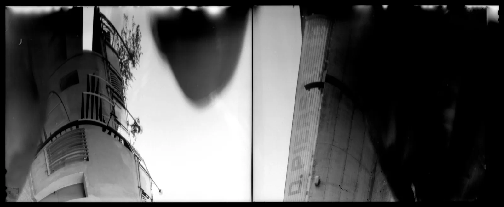
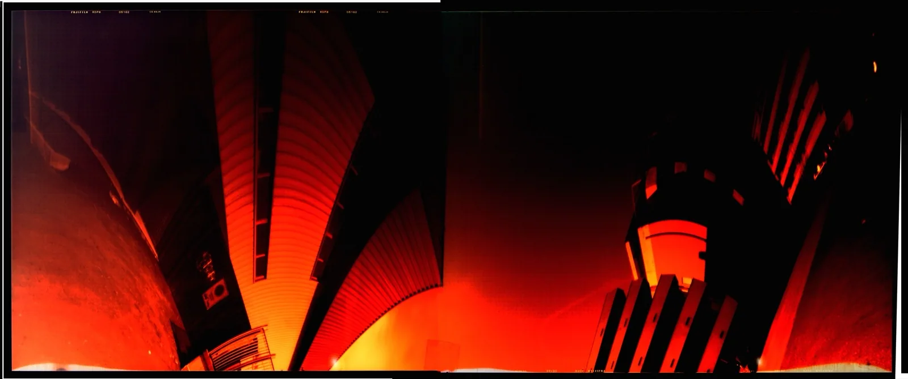
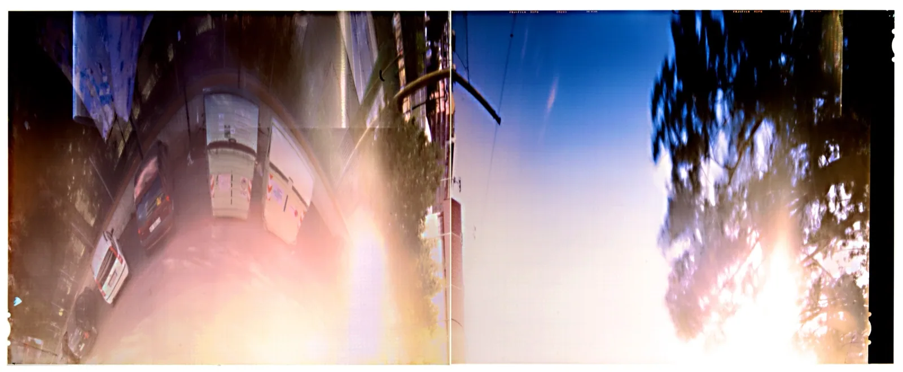
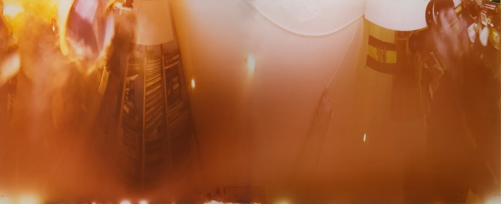
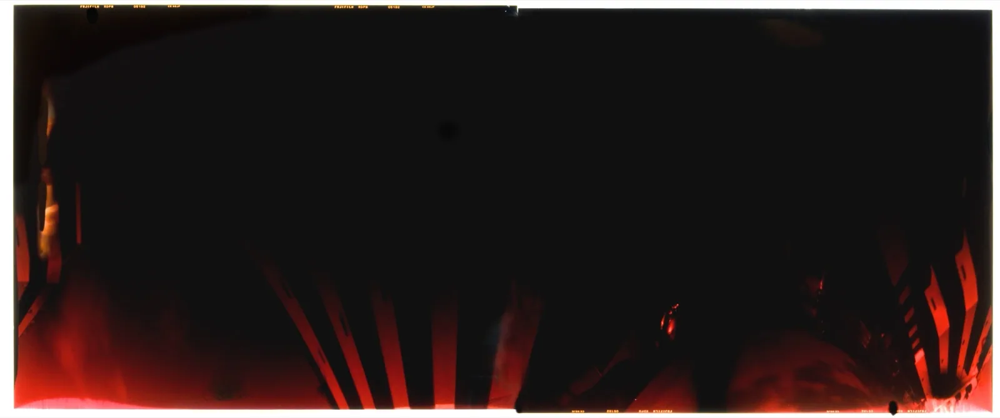
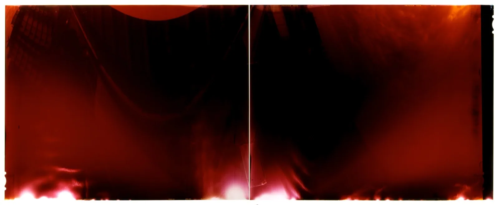
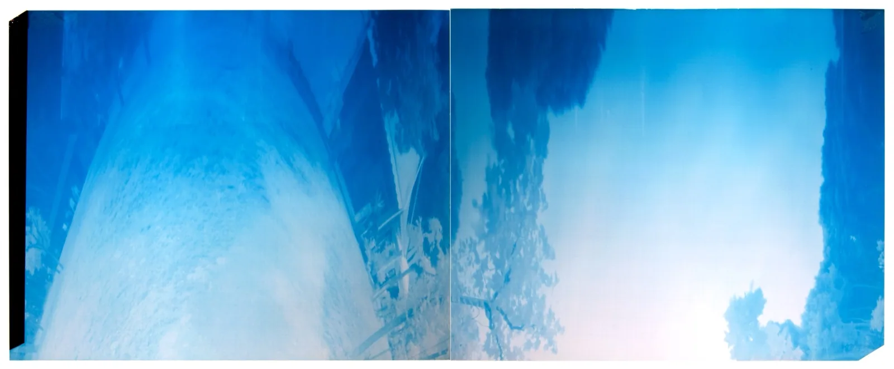
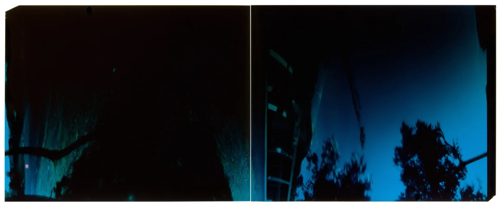
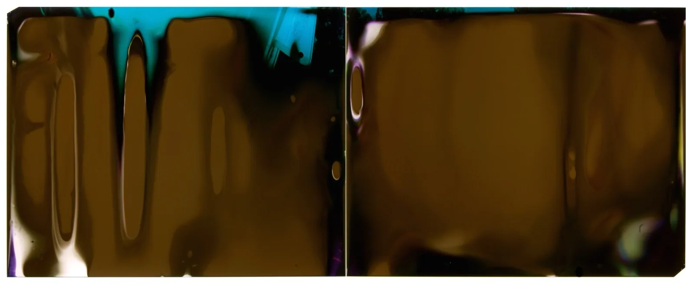
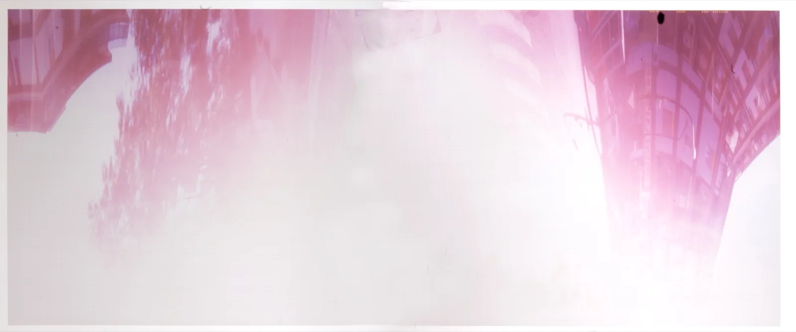
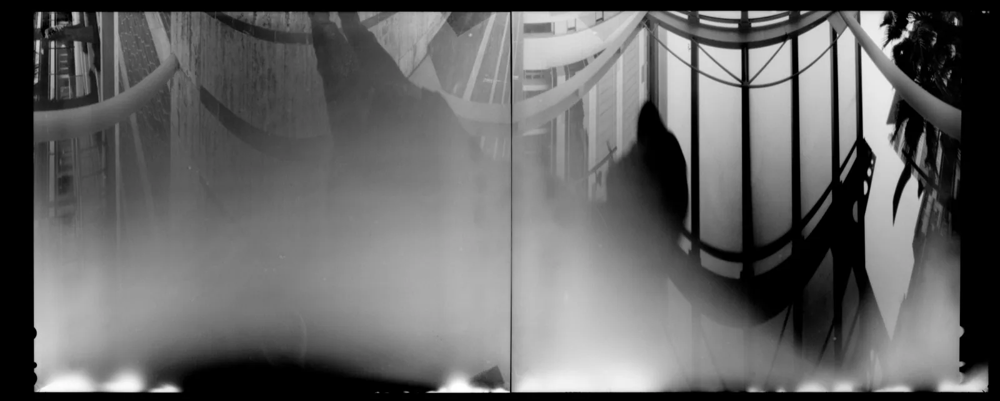
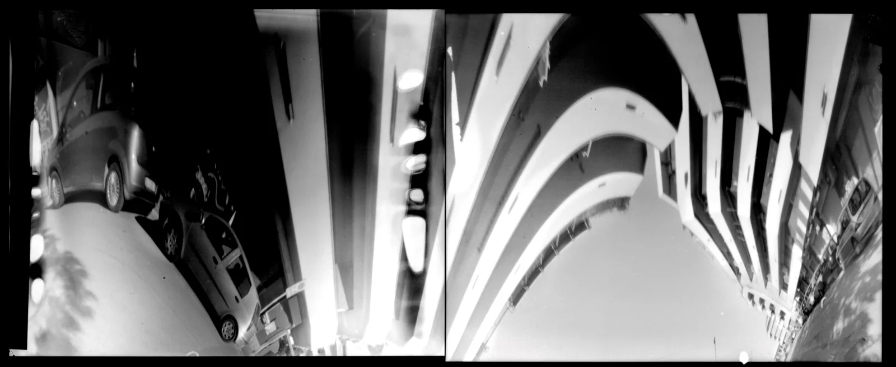
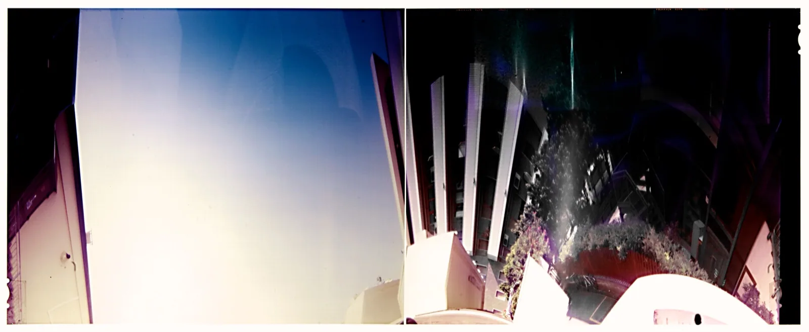
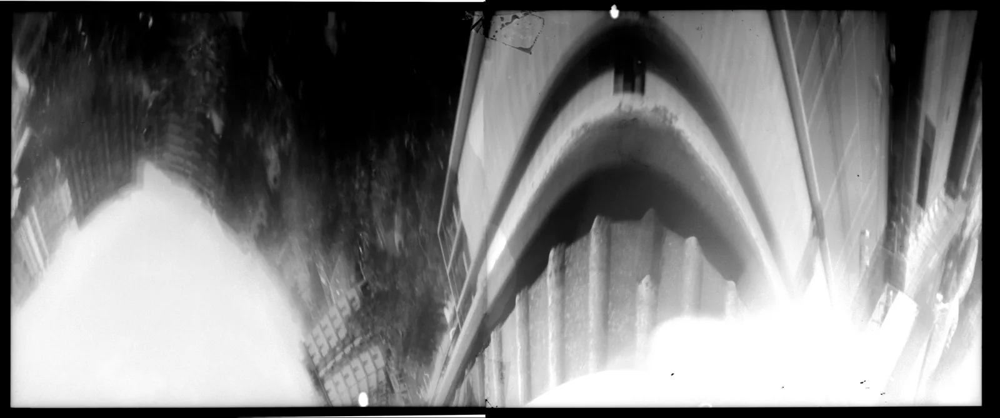
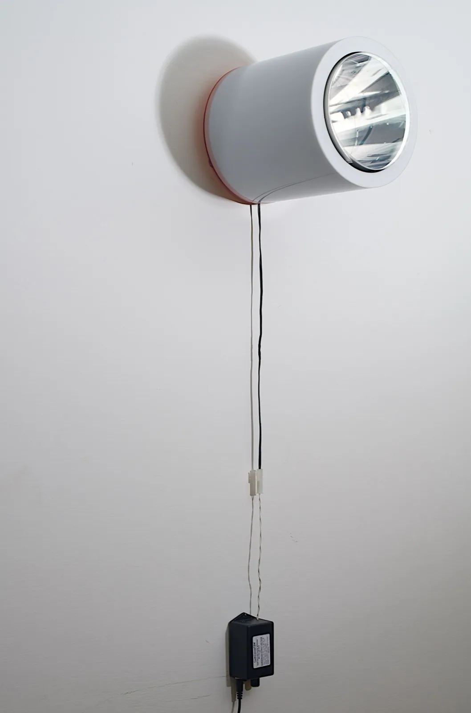
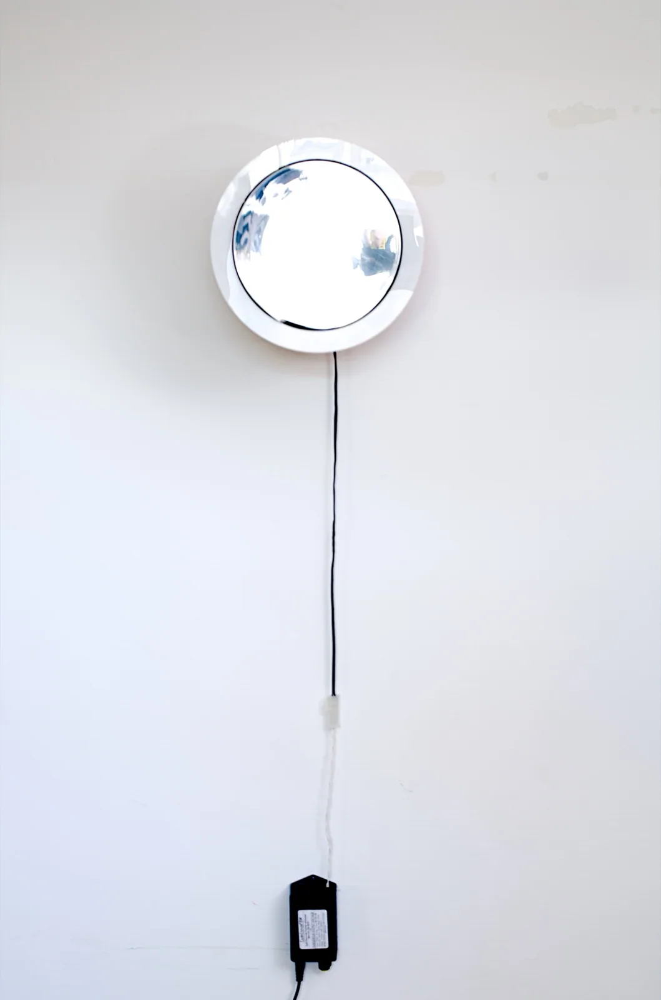
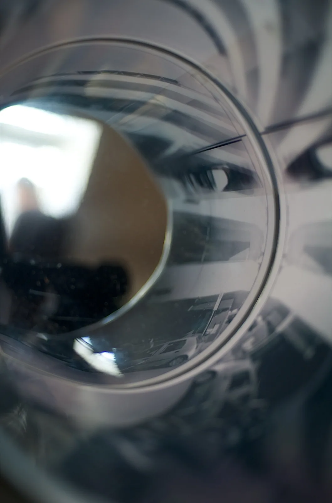
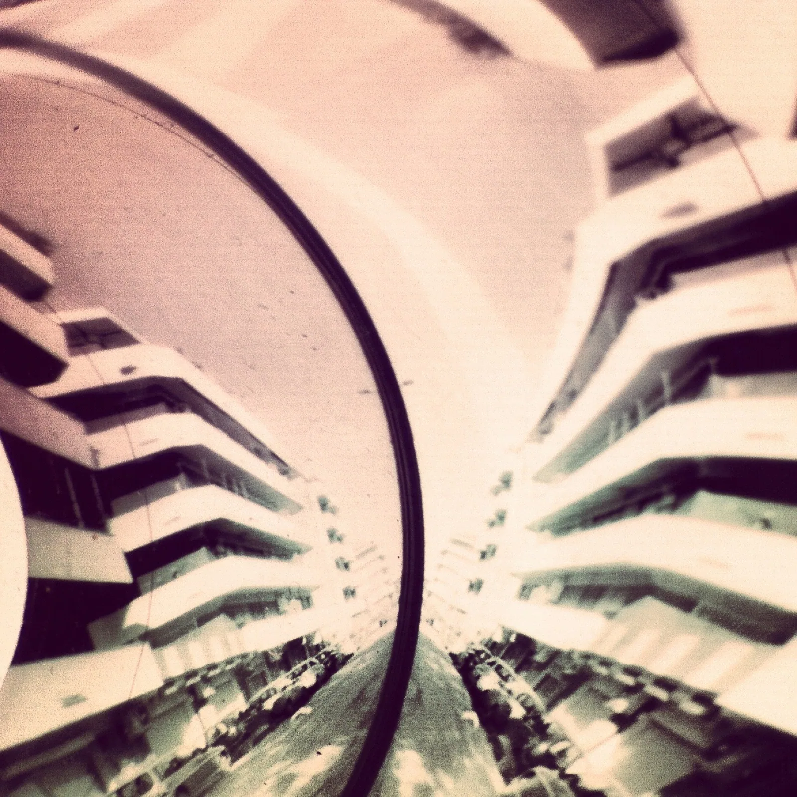
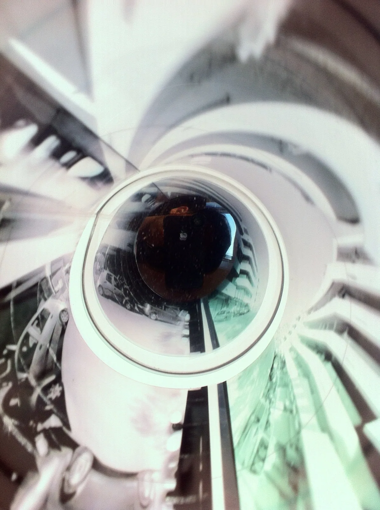
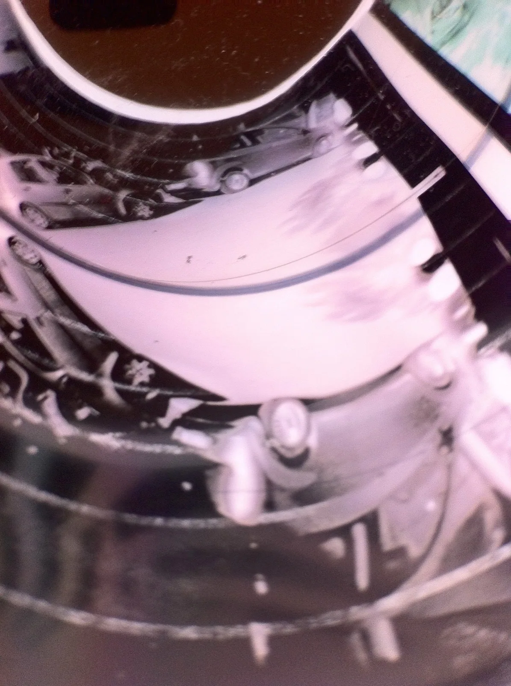